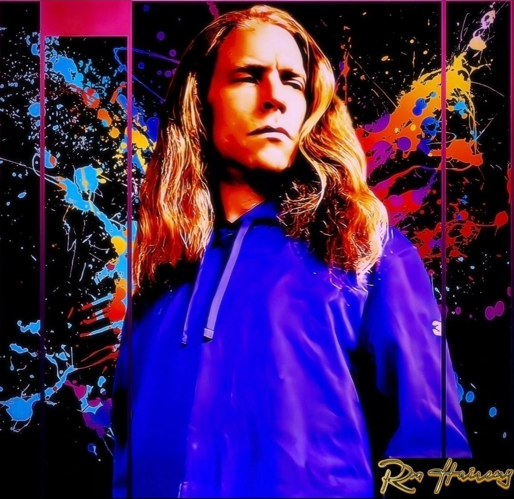

Ron Hairemy

Ron Hairemy — the umbrella identity. Music, visual art, and the A Sorrowmancer’s Requiem book series, all under one name. Craigles O’Grady had to die for Ron Hairemy to become fully realized.
The Death of Craigles is the album that buries the past — growth, rebellion, and self-reclamation. And the debut acapella single “Momentarily” is in the works: a song about loving yourself so abundantly it pours into empty cups, instead of setting yourself on fire to keep someone else warm.
© O’Grady Promotions